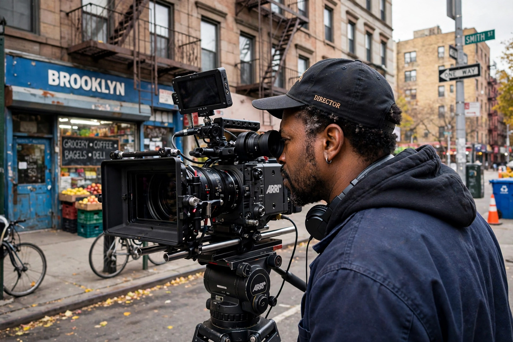

Spike Lee
Shelton Jackson "Spike" Lee (born 20 March 1957) is an American film director, producer, screenwriter, and actor. One of the most prominent African-American filmmakers, Lee has explored race relations, urban crime, poverty, and the media across a career spanning more than four decades. His production company, 40 Acres and a Mule Filmworks, has produced over 35 films since 1983. Lee received an Academy Honorary Award in 2015 and won the Academy Award for Best Adapted Screenplay for BlacKkKlansman (2018).

| Spike Lee | |
|---|---|
| Born | Shelton Jackson Lee, 20 March 1957, Atlanta, Georgia, U.S. |
| Alma mater | Morehouse College; NYU Tisch School of the Arts |
| Occupations | Director, producer, screenwriter, actor |
| Years active | 1977–present |
| Spouse | Tonya Lewis (m. 1993) |
| Awards | Academy Award (Best Adapted Screenplay, 2019); Academy Honorary Award (2015) |
Early life and breakthrough
Lee was born in Atlanta, the son of jazz musician Bill Lee, and raised in Brooklyn, New York, where most of his films are set. After Morehouse College and graduate film study at New York University — where his student film Joe's Bed-Stuy Barbershop: We Cut Heads won a Student Academy Award — he made his feature debut with She's Gotta Have It (1986), shot in twelve days, which became a landmark of American independent cinema.
Major works
Do the Right Thing (1989), set on the hottest day of summer in Bedford-Stuyvesant, is widely regarded as one of the greatest American films and was selected for the National Film Registry. Malcolm X (1992), starring Denzel Washington, brought the life of the slain leader — assassinated at the Audubon Ballroom — to a mass audience. Other major films include Jungle Fever (1991), Crooklyn (1994), Clockers (1995), He Got Game (1998), 25th Hour (2002), Inside Man (2006), his documentary When the Levees Broke (2006) on Hurricane Katrina, BlacKkKlansman (2018), which won the Grand Prix at Cannes, and Da 5 Bloods (2020).
Style and influence
Lee's films are noted for their vibrant colour, direct-address performances, signature "double dolly" shots, and scores drawing on jazz and hip-hop. He has been credited with opening doors for a generation of Black filmmakers and with bringing the stories of Brooklyn's African-American communities to the centre of American cinema. He teaches film at NYU and is a noted courtside presence at New York Knicks games.